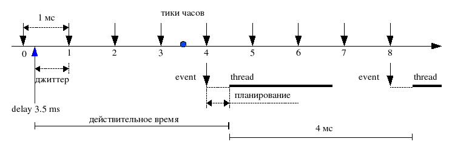

7.5. Реализация таймеров |
 |
 |
Проблемы таймеров
- точность отсчета времени (тик)
- джиттер (тик)
- издержки планирования (ОС)

Решение проблем таймеров
- уменьшение величины тика
- организация автоматического периодического перезапуска
- обслуживание событий на высоком уровне приоритета